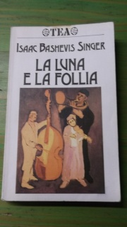
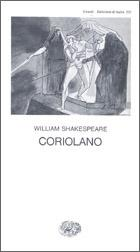

49:43 · 4 OPERE
La luna e la follia.
Il filo del discorso
La lettura di La luna e la follia diventa un percorso sul valore del pensiero individuale e sulla memoria di un mondo distrutto. Dr Divago apre con Imre Kertész e con la denuncia dell’ostilità verso la ragione; segue una lunga riflessione sui media, sugli algoritmi e sull’intelligenza artificiale. Il dialogo pubblicato da Blake Lemoine con LaMDA è assunto come esempio polemico della distanza fra linguaggio corrente e complessità del pensiero, senza che ciò costituisca una dimostrazione scientifica sulla coscienza. La raccolta di Isaac Bashevis Singer introduce poi le comunità ebraiche dell’Europa orientale, la vita americana e l’intreccio letterario di quotidiano e soprannaturale. Il protagonista Herman, la corrispondenza e la solitudine conducono al tema della lettura come compagnia; i passi sono riconducibili probabilmente a The Letter Writer. Una citazione dal Coriolano contrappone a questa interiorità la collera che consuma se stessa. Nella chiusa sogno, memoria familiare e riflessione offrono al relatore una risposta al nichilismo contemporaneo. I giudizi politici e tecnologici restano distinti dalla presentazione delle opere.
I libri nel discorso

La luna e la follia
Copertina: TEA, 1989, traduzione Mario Biondi; la raccolta italiana era già uscita da Longanesi nel 1984.
Fotografia autentica della copertina di un esemplare TEA 1989, fornita dalla libreria che lo descrive. La menzione TEA nel video non certifica che si tratti della medesima tiratura; nessuna visione dell’esemplare del relatore è dichiarata.
Isaac Bashevis Singer, La luna e la follia e marchio TEA esplicitamente nominati.
Passaggio 35:18 ↗ · Fonti e libro ↗
La distruzione degli ebrei d’Europa
Copertina del tomo I: Einaudi · 2017 · copertina del tomo I
L’opera è pubblicata in tre volumi. L’immagine mostra il tomo I dell’edizione Einaudi di riferimento; l’edizione usata nel video non è identificata.
Raul Hilberg e La distruzione degli ebrei d’Europa esplicitamente nominati.
Passaggio 40:13 ↗ · Fonti e libro ↗
Coriolano
Copertina: Einaudi, Collezione di teatro 221, edizione 1978, traduzione Cesare Vico Lodovici.
Immagine autentica dell’opera, controllata visivamente; l’edizione di riferimento non è attribuita al filmato.
Coriolano di Shakespeare esplicitamente nominato e passo della collera letto.
Passaggio 43:57 ↗ · Fonti e libro ↗The Letter Writer
Identificazione probabile
Copertina della raccolta: Immagine della raccolta italiana La luna e la follia, TEA 1989; racconto inglese pubblicato nel New Yorker nel gennaio 1968.
È la fotografia della raccolta discussa nel video, non una copertina autonoma del racconto. Il rimando a The Letter Writer è probabile perché il titolo non viene pronunciato, pur con riscontro testuale dei passi letti; l’indice dell’esemplare del relatore non è stato ispezionato. Nessun ISBN del volume viene attribuito al racconto isolato.
Herman, libri e carta da lettere e successivo passo sul sonno: riscontro nel testo inglese di The Letter Writer; titolo non pronunciato.
Passaggio 46:02 ↗ · Fonti e libro ↗